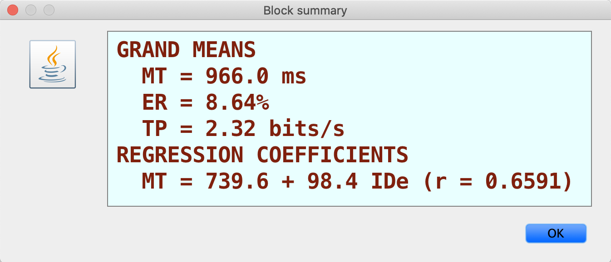

Understanding The Difference of Left Hand vs. Right Hand Using GoFitts
Participants: Brett Schneider and Drew Brown (roommate)
Summary:
I tested the ability of my roommate and I's left hand vs. right hand using the GoFitts Program. I ran the test "Fitt's Task 1D or 2D"
where we had to click between two objects as fast and as accurately as possible. The grand means of all the data held true to my
hypothesis that the right hand would be significantly more accurate and quick that the left. Unfortunatley none of my roommates
were left handed so I didn't get any data from a case like that. For the testing we used the trackpad of a 13" Macbook Pro and ran 9
tests with 9 clicks per configuration on both hands.
Results:
Brett Left Hand:

Brett Left Hand:
Drew Right Hand:
Drew Left Hand:
Chart: